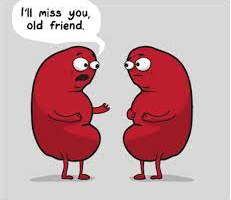

Calculadora de ClCr

Home
Calcular Filtrado
Estimar Filtrado
Sugerencias
Estimacion de Filtrado Glomerular
Formula de Schwartz
NPT menor de 1 año:
NT menor de 1 año:
Entre 2 y 12 años:
Femenino entre 13 y 21 años:
Masculino entre 13 y 21 años:
Talla(cm):
Creatinina Plasmatica(mg/dl):
Calcular
Formula de Schwartz (Modificada)
Talla(cm):
Creatinina Plasmatica(mg/dl):
Calcular